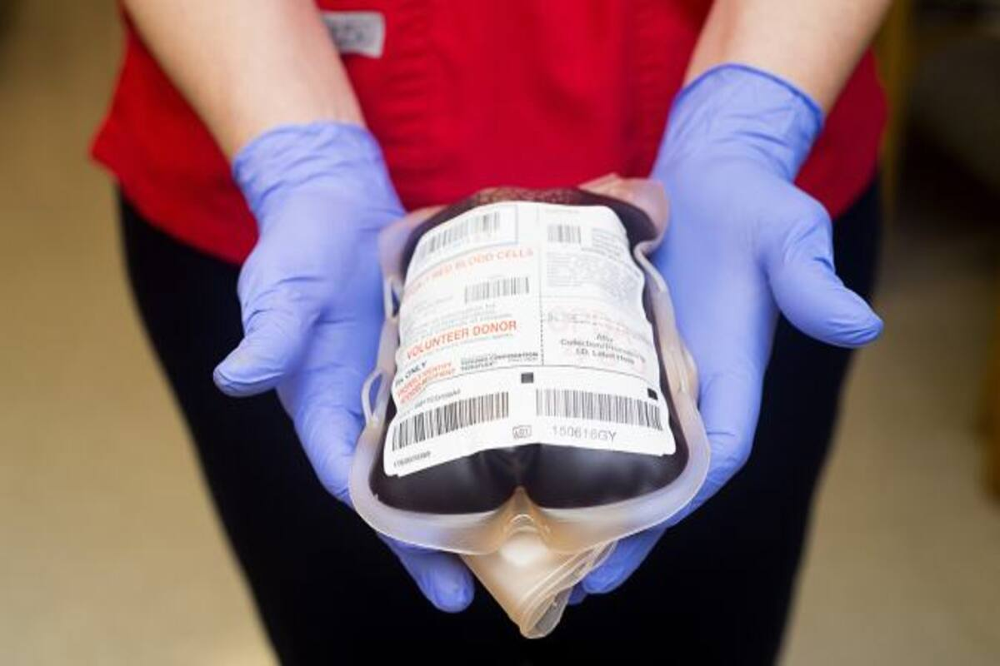

Samata Blood Bank enforces Drug & Cosmetic Act,
National blood policy standards and guidelines ensuring proper collection & donation, effective management and monitoring the quality and quantity of the donated blood.
Considering the national roll out, e-Rakt Kosh has been developed with modular and scalable approach with configurable rule based architecture allowing customization to easily incorporate specific requirements from nationwide stakeholders.